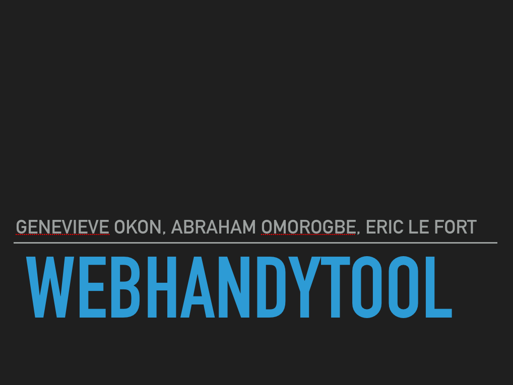
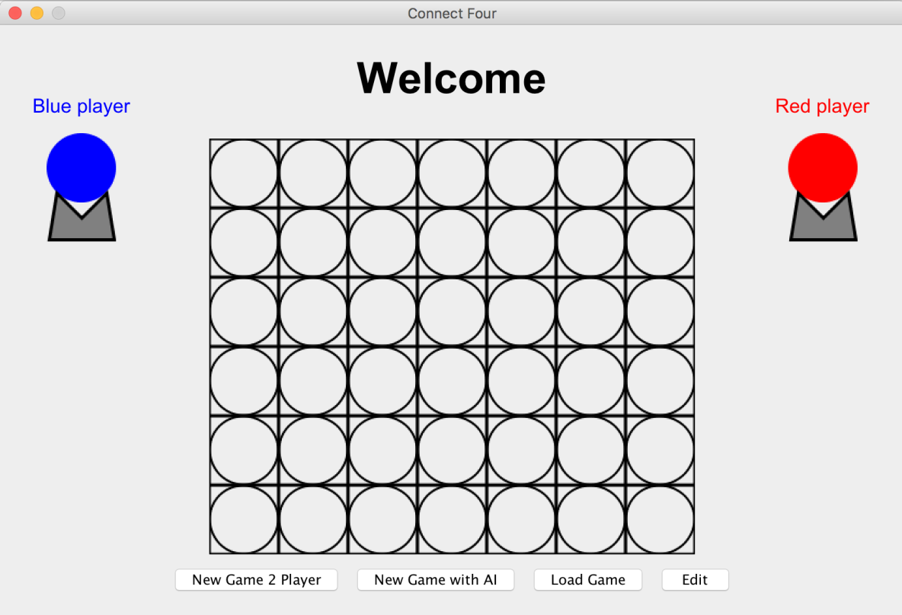
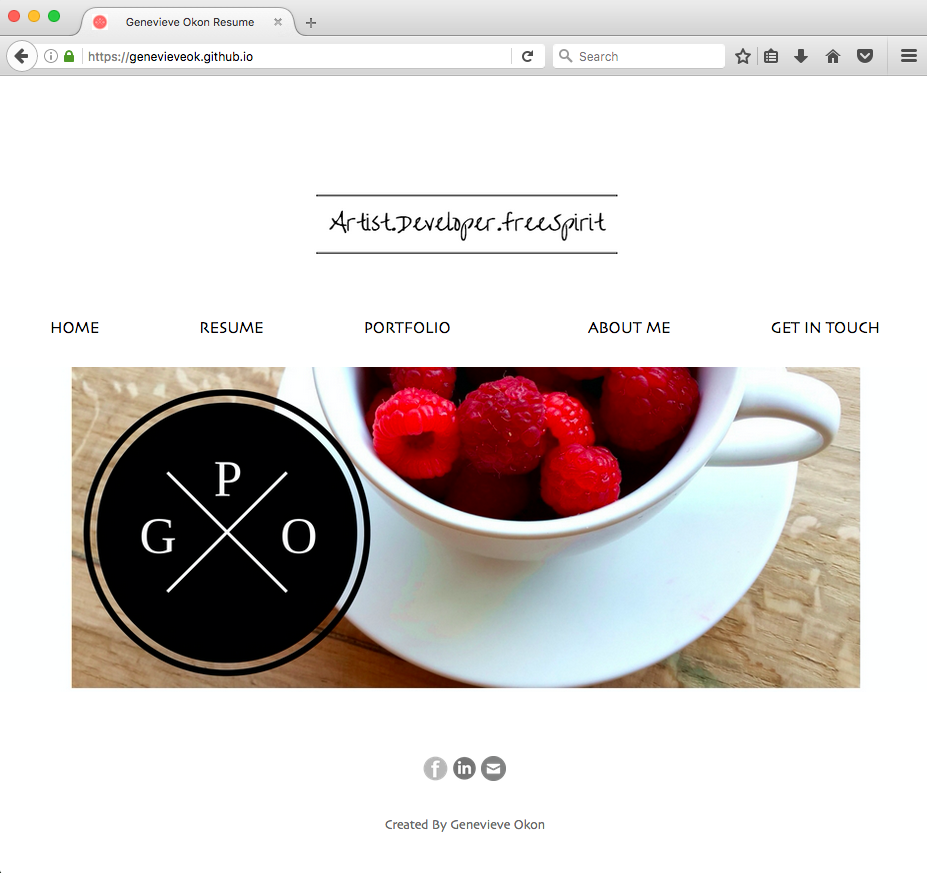
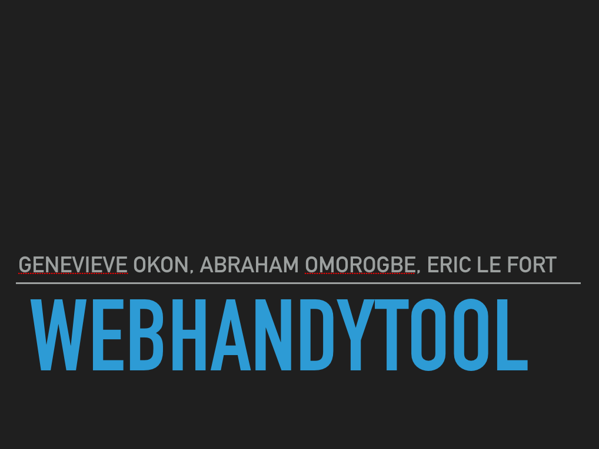
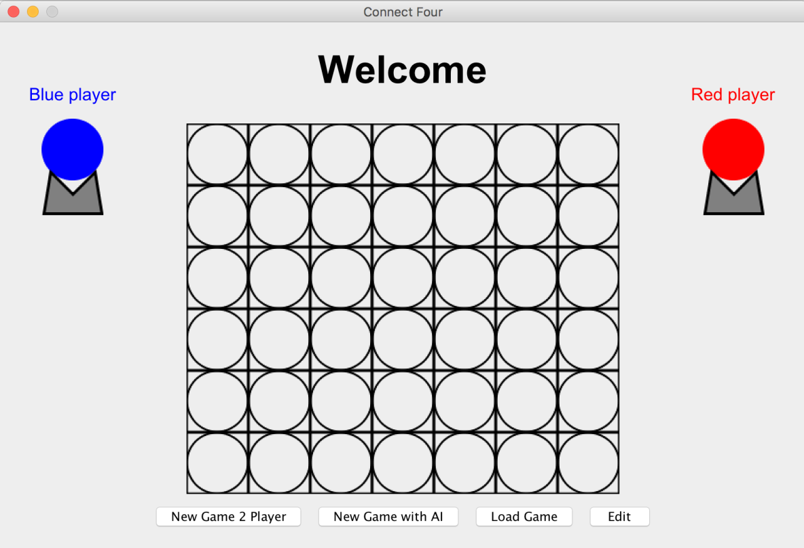
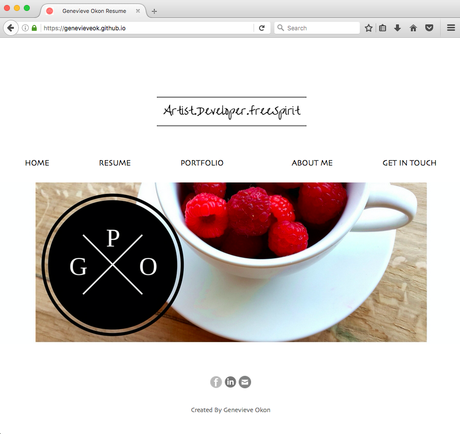
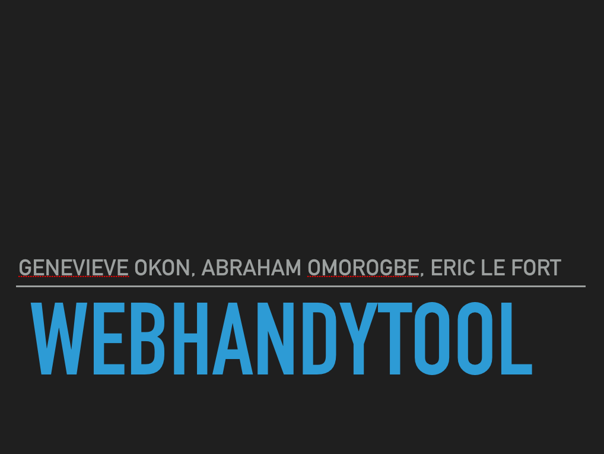
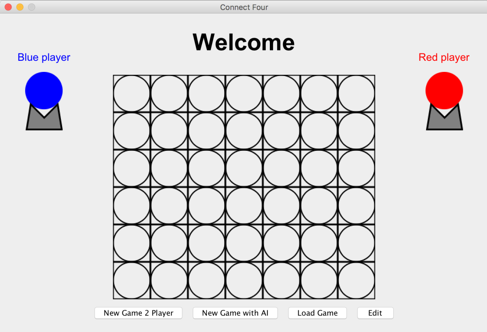
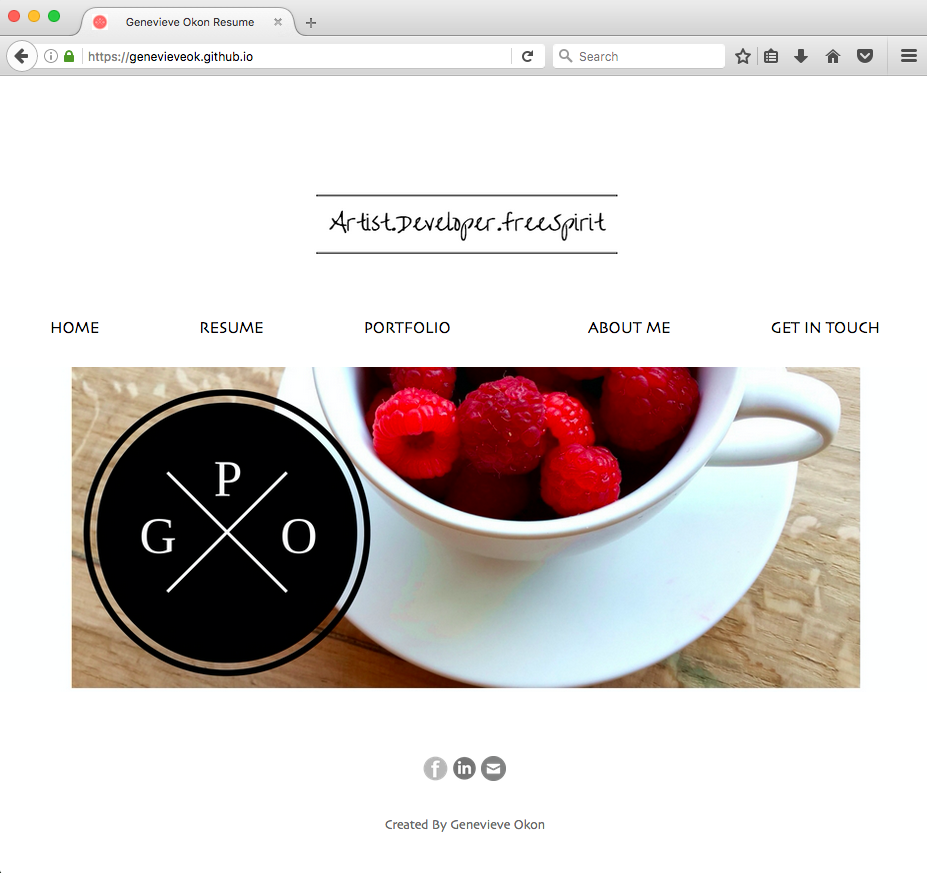

HOME
RESUME
GET IN TOUCH
PORTFOLIO
Tutorial #1@@
Tutorial #2
Tutorial #3
ABOUT ME
  
×
![Worked in a group of three people and developed an app called 'HelpmeOut' which helps students(who attend Mcmaster) find the right services convenient and stress-free.
HelpMeOut was a 2nd Year assignment and my group received an excellent grade for this project.
The Algorithms Used included Boyer Moore, Red Black BST(Binary Search Tree) and Merge Sort.
HelpMeOut simply links buyers and sellers looking for a particular service, the sellers can post what they are selling and buyers can contact the sellers to
get information about the products or services.](helpmeout.png) 




